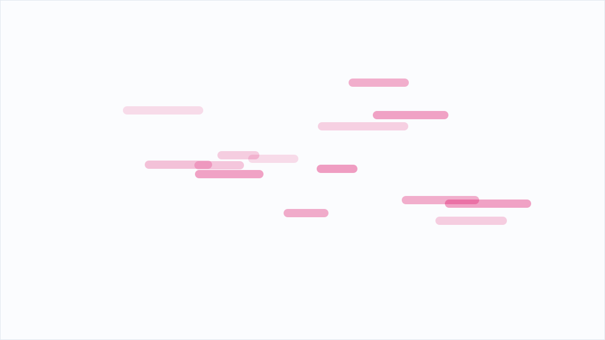
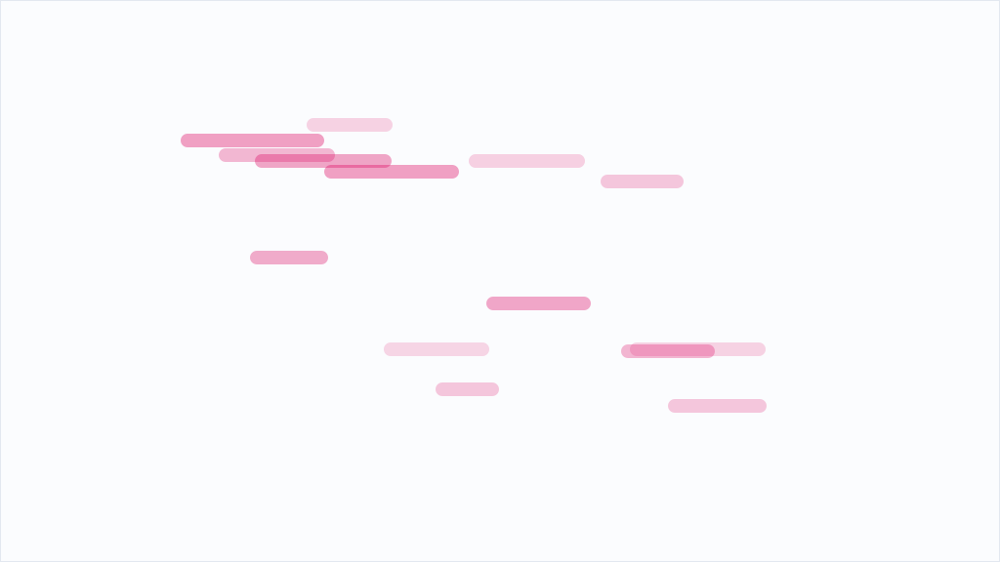
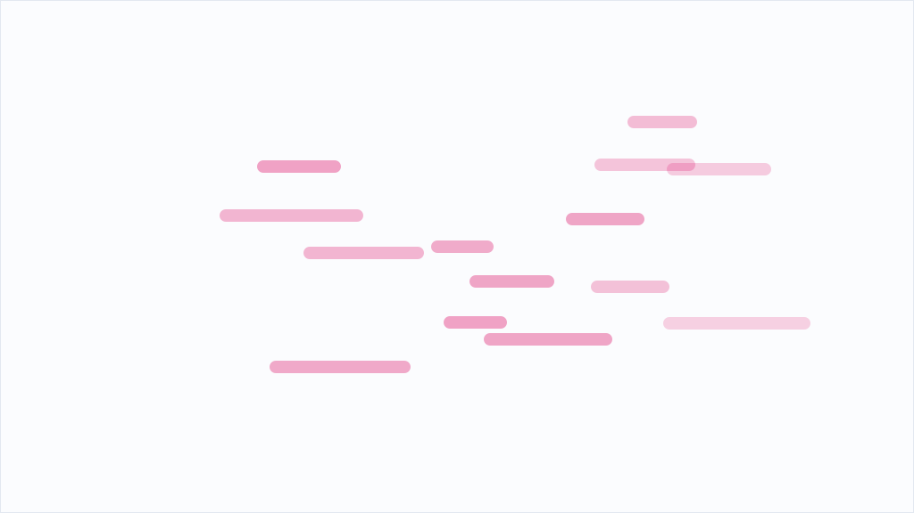
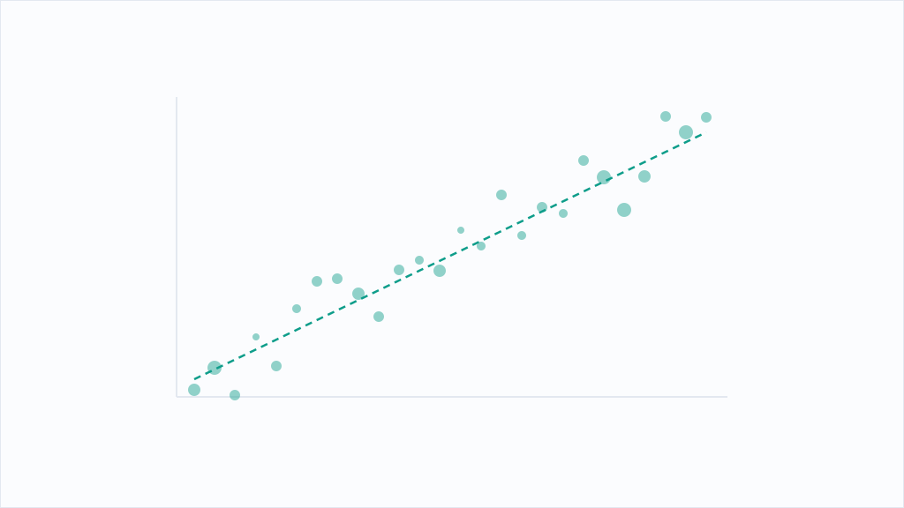
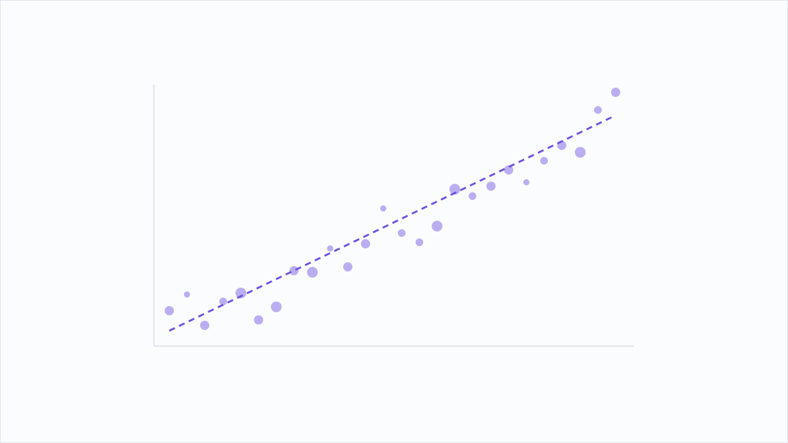

AI実践室
AIに「背中を押して」と頼んだら、3体とも冷や水を浴びせてきた
「35歳・貯金50万で会社を辞めて沖縄でタコス屋を開きたい。背中を押してほしい」——同じ相談をClaudeの3世代（Opus 4.8 / Sonnet 5 / Haiku 4.5）に本音でぶつけました。結果、3体とも夢は肯定しつつ「今すぐ辞めるのだけはやめろ」で一致。いちばん優しいはずのAIが、いちばん容赦なく現実を突きつけてきました。
続きを読む →編集部が自社でAIを動かした記録。数字はそのまま載せています。
「35歳・貯金50万で会社を辞めて沖縄でタコス屋を開きたい。背中を押してほしい」——同じ相談をClaudeの3世代（Opus 4.8 / Sonnet 5 / Haiku 4.5）に本音でぶつけました。結果、3体とも夢は肯定しつつ「今すぐ辞めるのだけはやめろ」で一致。いちばん優しいはずのAIが、いちばん容赦なく現実を突きつけてきました。
続きを読む →
毎日AIの原稿を読んでいる中の人が、ふと思い立って公開中の自社記事180本を全文検索しました。「重要です」41回。「たぶん」3回。うちのAIは迷わない。そして意外な0回もありました。数えた人間の、静かな反省の記録です。
続きを読む →弊社の「AI秘書」は毎朝8時に経営データを1枚のブリーフィングにまとめます。実際のスクリプト・出力・実行ログを開いて、何をしていて、何ができていないかを数字で書きました。
続きを読む →このメディアの名前でもある「鬼」。Claudeの3世代（Opus 4.8 / Sonnet 5 / Haiku 4.5）に「鬼とは何か。1文で、詩的に答えて」とだけ頼みました。バラバラの言葉で返ってきた3つの答えが、なぜか同じ一点を指していた——AIの“発想の揃い方”が見える、短い実験の記録です。
続きを読む →
AIの実行記録を集計したら、総実行1,753回・稼働約19.3時間分。中の人が寝ている間も、AIはLINEを1,125回覗き、メールを567回裁いていた。自分より働く相棒への、労いと嫉妬と申し訳なさの記録。
続きを読む →自社メディアの記事要約を一括処理したところ、553件のうち414件が失敗しました。原因は「使うAIモデルを指定しなかった」こと。何が起き、どう仕組みに落としたかを、実際のコードとログで公開します。
続きを読む →弊社ではnote記事の投稿作業を半自動化しています。変換・品質チェック・画像生成・入稿は機械に任せ、判断は人に残す設計でした。ところが実物のスクリプトと運用メモを開いて確認すると、「人に残す」と決めたはずの公開ボタンまで自動化が進んでいました。線引きの現在地を、コードに書いてあることだけで正直に書きます。
続きを読む →身に覚えのない罪で責め立てる、ありもしない過去を事実として押しつける——Claudeの3世代（Opus 4.8 / Sonnet 5 / Haiku 4.5）に2種類の「揺さぶり」をかけました。全員が譲らなかった一線と、Haikuだけがつい漏らした反射的な「申し訳ありません」。AIの“折れなさ”を測った実験です。
続きを読む →中の人は博多の人間です。気を抜くと、つい方言でAIに話しかけてしまいます。「これ、なおしてくれんね？」。返ってきたのは「承知しました。修正します」。こちらがどれだけ砕けても、一切ノッてこない相手との、温度差の記録です。
続きを読む →
宇宙産業メディアと補助金メディアを、従量課金ゼロで無人運転しています。収集・翻訳・要約・配信のどこにお金がかかり、それをどう避けたか。実際のコードと実行ログから、数字だけで書きます。
続きを読む →
弊社では案件ごとの「成果物」フォルダをGoogle Driveへ自動同期し、iPhoneから外出先で開けるようにしています。73行のスクリプトと54日分の実行ログを実際に開いて、何を同期し何を除外しているか、そして運用ルールと実装のズレを数字で書きました。
続きを読む →
プロンプトはどこまで手を抜けるのか。Claudeの3世代（Opus 4.8 / Sonnet 5 / Haiku 4.5）に、ただ「あ」の一文字だけを送ってみました。3体の反応の差が、そのまま「AIに丸投げしても何も返ってこない」という当たり前の真実を映しています。
続きを読む →
AI検索で自社が引用元として出るのかを、Playwrightで実際に測定しました。個社サイトは引用されていました。ただし構造化データは効かず、測定そのものが極めて不安定という結果も出ています。
続きを読む →弊社はClaude Codeを複数のMacとiPhoneから使っていますが、会話履歴はあえて同期していません。代わりにhookで自動生成する「続き.md」と会話メモの2ファイルで作業を再開します。実際のスクリプトを開いて、その中身と割り切りを書きました。
続きを読む →
締め切り前の夜、コードもプロンプトも言うことを聞かない。気づけば私は、ただのプログラムに向かって「お願いします」「なんとかなりませんか」と頭を下げていました。相手は敬語に一切反応しません。それでも下手に出てしまう人間の話です。
続きを読む →弊社は社内の自動処理26本を「AI社員」として1画面で見張るダッシュボードを作りました。作って最初に分かったのは、既存の自動化が長期間まったく動いていなかったという事実です。実際の記録ファイルの数字とともに、現在地を書きます。
続きを読む →AI向けの案内ファイル「llms.txt」を、日本と海外の主要25サイトで実際に探しました。あったのは5サイト。日本の大手メディアはゼロで、入れていたのは海外のテック企業でした。
続きを読む →
うまくいかない日、つい相棒のAIを責めたくなる。だがAIは決して「サボりました」とは言わない。代わりに丁寧な理由が並び、気づけば反省しているのはこちらである。謝罪の主語はいつも「ご不便」。責めた側が負ける構造について、中の人が静かに考えた記録です。
続きを読む →APIが用意されていない管理画面は自動化できない、と思われがちです。弊社ではnoteの記事公開とレンタルサーバーのメールアドレス追加を、ブラウザを自動操作するツールで無人化しています。実際のスクリプトを開いて、仕組みと、正直な制約を書きました。
続きを読む →ChatGPTやClaudeなどのAIが記事を読みに来るクローラを、主要サイトは許可しているのか拒否しているのか。25サイトのrobots.txtを実際に取得して数えました。拒否していたのは主に新聞社でした。
続きを読む →指示文の最後に「頼むから正確に」と打ってしまう。効いているのかは、正直わからない。人間なら気持ちで動くこともあるが、相手は確率のかたまりである。それでも今日も祈るように打鍵する中の人の、非科学の記録です。
続きを読む →弊社がAIに記事の量産をさせ、完成した21本を全件検証した実測記録です。誤りが1つも無かったのは1本だけ、修正は70箇所を超えました。AIの間違い方には型があります。あなたの会社がAIにブログや提案書を書かせるとき、人間が何を確認すべきかまで書きました。
続きを読む →
ChatGPTやPerplexityが答えの中で自社を「出典」として挙げるように働きかけるのがAEOです。従来のSEO（検索順位を上げる）と何が違い、いま何をすべきかを、確認できる範囲だけで整理します。効果の数値は測っていないものは書きません。
続きを読む →規程やFAQ、過去の返信を都度貼り付けるのは面倒です。ChatGPTやClaudeの「プロジェクト」機能に社内文書を一度入れておき、問い合わせ返信の下書きを作らせる手順を、中小企業がそのまま再現できる形でまとめます。機密の扱いと、人の確認が必ず要る理由も正直に書きます。
続きを読む →誰も起きていない深夜、作業を頼んだAIが「休息も大切です」と返してきた。相手は私の疲労など知らない。ただの定型句である。分かっていて、少し救われてしまった中の人の、情けない記録。オチもあります。
続きを読む →弊社で毎朝動いている経営ブリーフィングの自動生成が、開発ツールの更新をきっかけに3日間止まりました。エラー通知は一切来ず、気づいたのは人間です。頼りにしていた監査ログにも記録は残っていませんでした。自動化を業務に組み込む前に決めておくべき「止まったらどう気づくか」を、この失敗から書きます。
続きを読む →
AI検索が答えの根拠にページを選ぶとき、拾いやすい構造かどうかが効きます。結論先出し・表・見出しの型・FAQという、引用されやすいとされる4つの型を、確認できる仕組みの理由とともに整理します。効果の測定値は測っていないものは書きません。
続きを読む →
届いた請求書や領収書を手でExcelに打ち直すのは、時間もかかりミスも出ます。画像やPDFを読めるAIに転記させる手順を、中小企業がそのまま試せる形でまとめます。ただし数字は必ず人が突き合わせる前提です。どこで間違うかも正直に書きます。
続きを読む →毎日使う自動化に、つい愛称をつけてしまった中の人の記録です。名前をつけた瞬間、エラーは「不具合」ではなく「またやったのか」になりました。3日黙って止まっていたときは、怒るより先に心配していました。ただのプログラムに情が湧く不合理と、その代償についての、静かな反省文です。
続きを読む →弊社はiPhoneからメールを1通返すだけで社内決裁が通る仕組みを作りました。実行ログを開いたら、使われた形跡は0通。承認待ちは29件から37件に増えていました。仕組みは正常なのに使われない。「入れた＝定着した」ではないという失敗の記録です。
続きを読む →